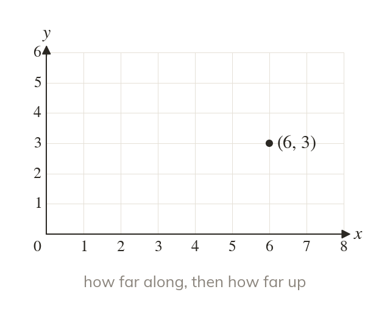
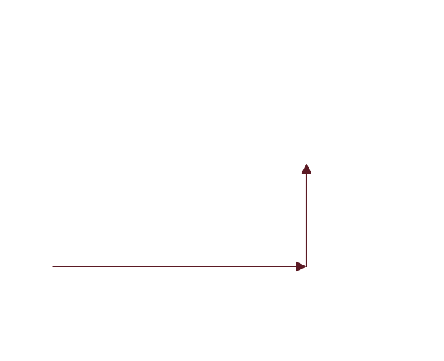

Reading a coordinate pair
A coordinate pair (x, y) gives the horizontal position first. Go along first, then up.
A coordinate pair (x, y) always gives the horizontal position first, then the vertical position: how far along, then how far up.